As Direções de Arte Originais do PostSpark
Estas são as referências visuais que você se lembra e que guiam a estética do produto: a tela de computador retrô com iluminação quente, a pilha irregular de papéis com grampos, o papel rasgado, a tipografia 3D extrudada, as janelas vintage de SO e os cartões de direct. Veja a imagem original real da curadoria e, onde disponível, o render de adaptação do PostSpark.
Gravar criativos — anúncio laranja

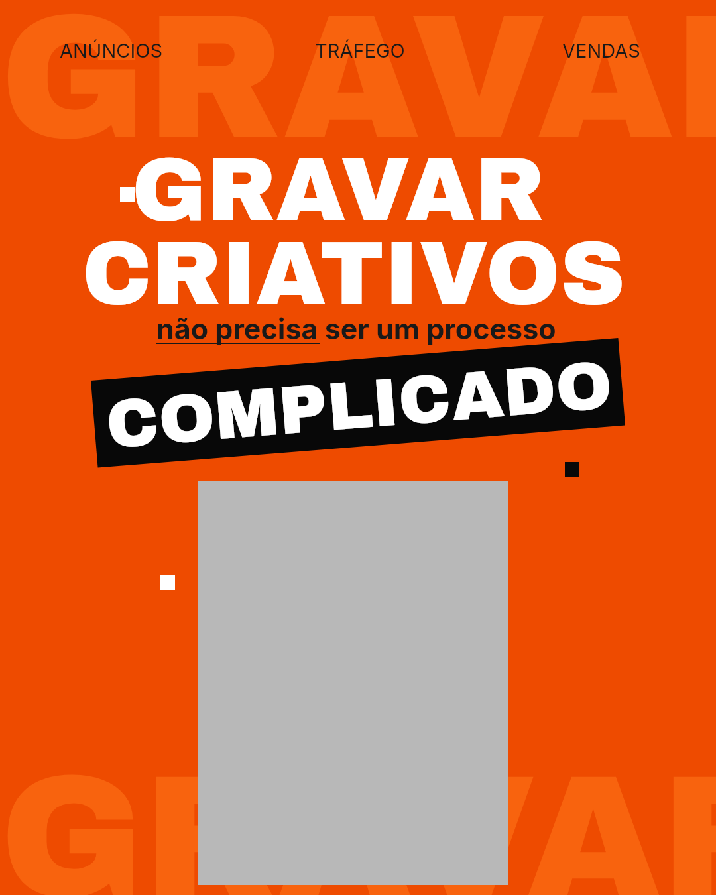
Fundo laranja saturado, palavras gigantes decorativas ao fundo, título branco pesado e faixa preta inclinada para ênfase. Foto vertical ocupa a base; o slot atual não recorta braço ou câmera e não reproduz o grão original. 2 regiões de título, 1 apoios textuais, 0 listas semânticas e 1 slots de mídia. 15 camadas em 1080×1350; fontes Archivo Black, Inter.
Perguntas antes do design — papel empilhado
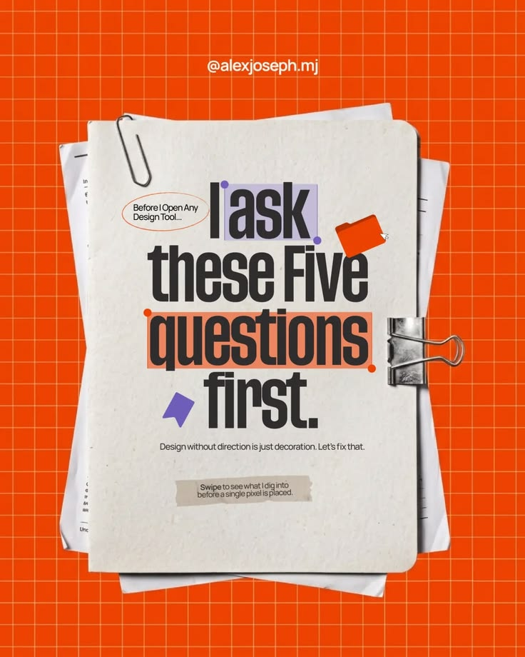

Pilha irregular de papel com textura, grampos metálicos e sombra sobre grade laranja. Título preto condensado em quatro regiões; realces lilás e coral; chamada lateral e fita de encerramento.
Truth about creative people — azul e amarelo
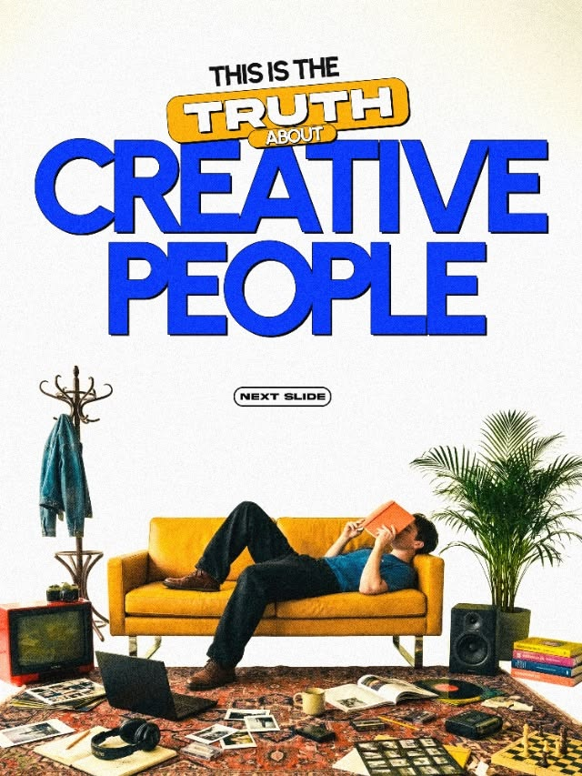
Design de referência com autoria visual curada.
Brutalism — editorial vermelho

Design de referência com autoria visual curada.
Prompt — retrato editorial com legenda

Design de referência com autoria visual curada.
Janelas sobrepostas — matriz reutilizável · adaptação
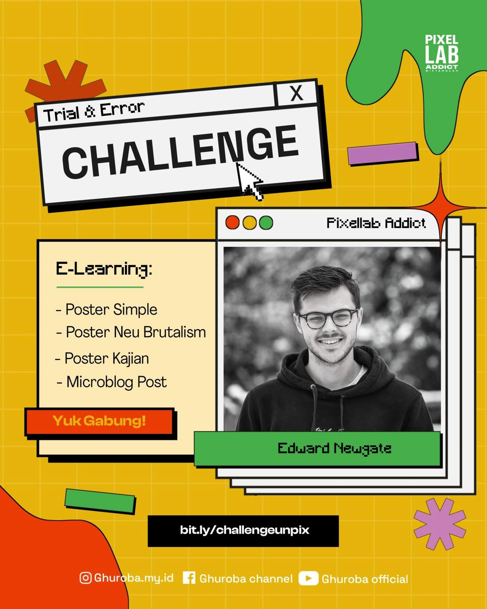
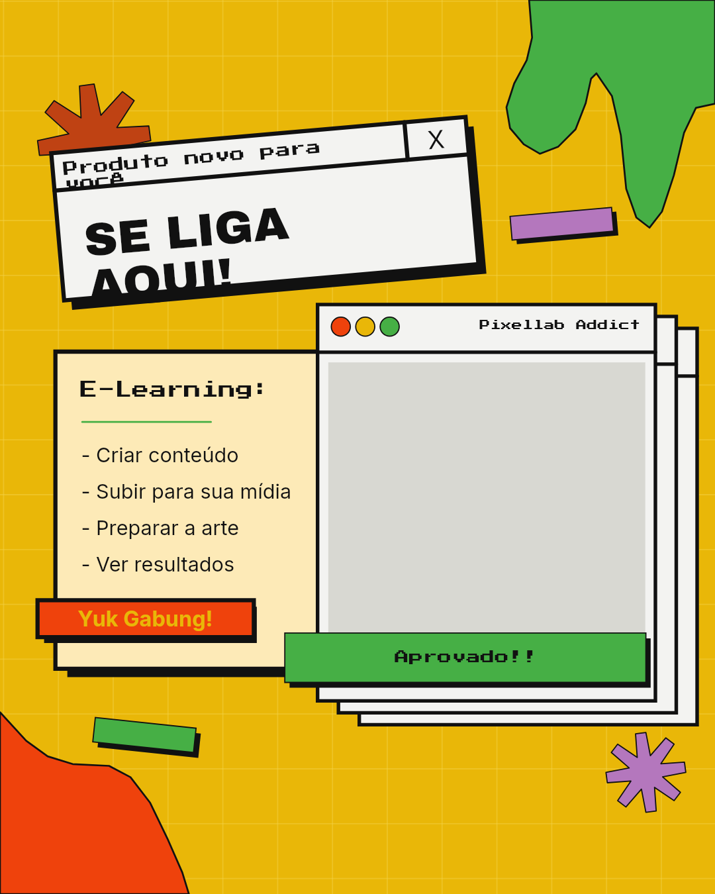
Janelas de interface sobrepostas com contornos pretos, sombras duras, grade amarela e adornos verde/laranja/lilás. Um painel abriga lista; outro, fotografia com faixa de legenda. Geometria e posicionamento dos painéis são fixos. 1 regiões de título, 1 apoios textuais, 0 listas semânticas e 1 slots de mídia. 70 camadas em 1200×1500; fontes Press Start 2P, Inter, Archivo Black.
A internet trouxe muita coisa boa — computador retrô
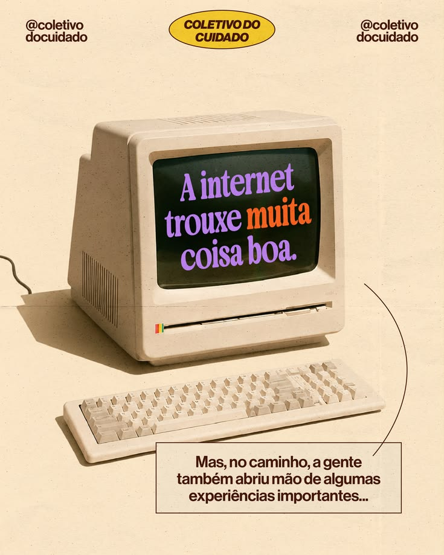

Fotografia de computador e teclado retrô com volume, perspectiva e luz quente sobre papel creme. Mensagem serifada lilás/coral na tela verde escura e apoio em quadro inferior.
Why do you actually exist? — pergunta editorial
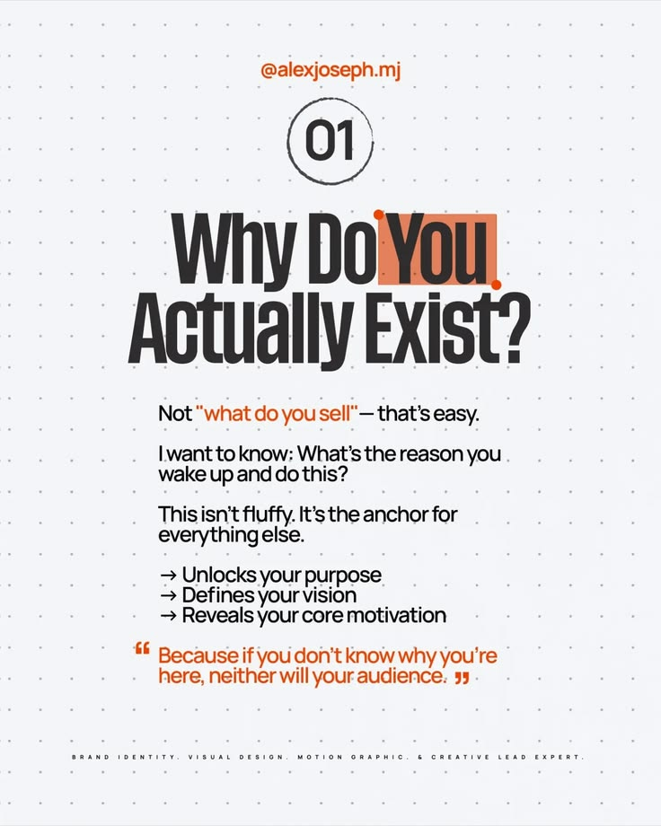
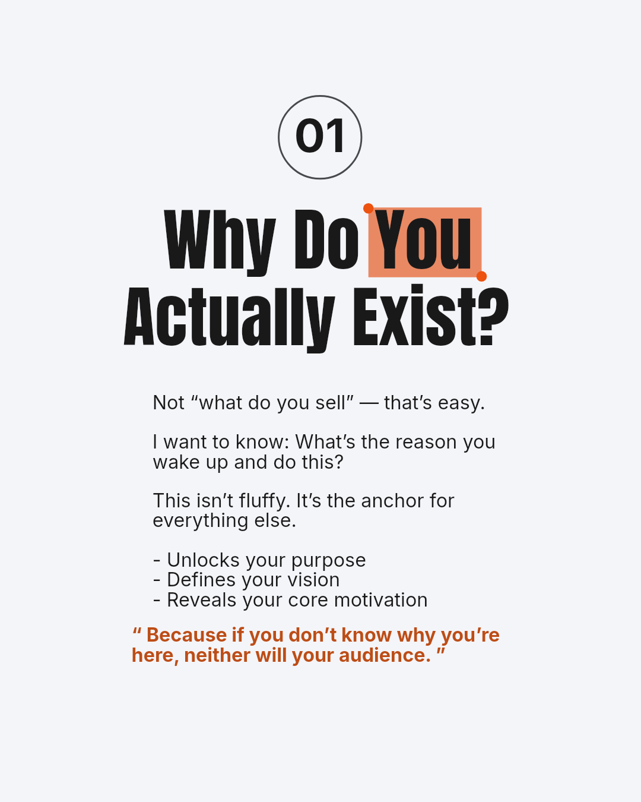
Página editorial clara com índice circular, título preto condensado, uma palavra sobre tarja coral, parágrafos curtos, lista de até três itens e citação laranja. A grade pontilhada fina do papel original ainda não está reproduzida. 3 regiões de título, 2 apoios textuais, 1 listas semânticas e 0 slots de mídia. 18 camadas em 736×920; fontes Inter, Anton.
Brutalist web design — pôster comercial

Design de referência com autoria visual curada.
Pieces — retrato com mosaico ácido
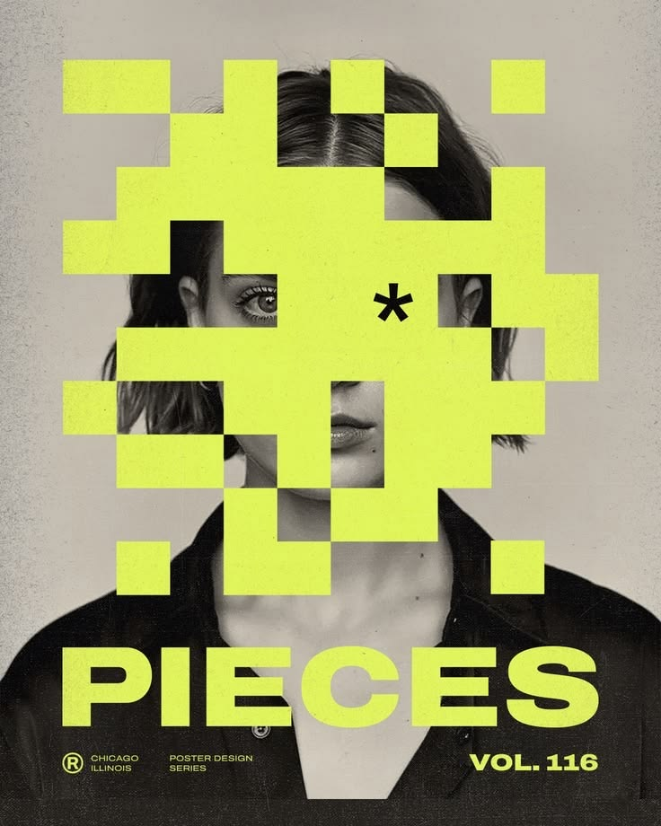

Retrato integral em preto e branco atravessado por mosaico de quadrados verde ácido; palavra larga e pesada na base. A grade esconde partes da imagem e precisa deixar o ponto focal legível; não há máscara de pessoa nem grão incorporado. 1 regiões de título, 0 apoios textuais, 0 listas semânticas e 1 slots de mídia. 57 camadas em 736×920; fontes Archivo Black.
Atalho para criar conteúdo — tarjas azuis
Design de referência com autoria visual curada.
Seu direct é uma mina de ouro
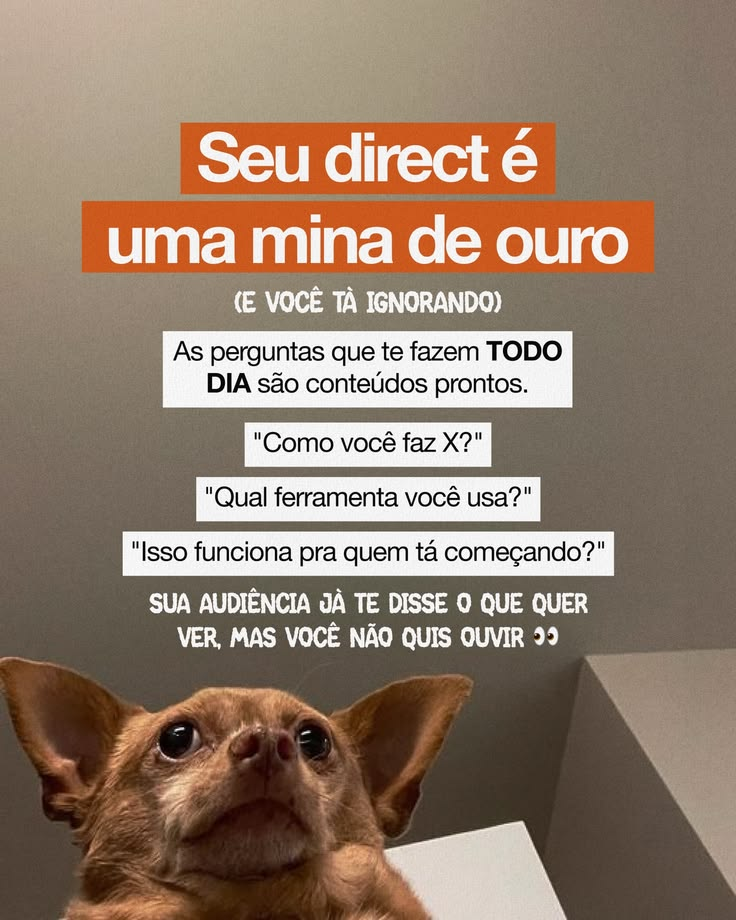

Título branco sobre faixas laranja, cartões brancos para explicação e exemplos, conclusão condensada e fotografia de reação na base. A composição alterna argumentos em pequenas ilhas de texto; não recorta o animal da foto. 2 regiões de título, 3 apoios textuais, 0 listas semânticas e 1 slots de mídia. 17 camadas em 736×920; fontes Inter, Archivo.
Você muda fazendo
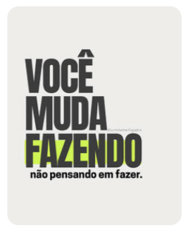
Design de referência com autoria visual curada.
Grid Systems


Grade modular azul fina sobre fundo creme, blocos azuis sólidos assimétricos e título sans preto grande atravessando células. Subtítulo menor alinhado à direita; grade e espaços vazios participam da hierarquia, com textura original omitida. 2 regiões de título, 1 apoios textuais, 0 listas semânticas e 0 slots de mídia. 18 camadas em 248×310; fontes Inter.
Marca diferente — resolver a dor certa


Mensagem preta em papel claro e resposta branca em janela azul com bordas rasgadas, ao lado de um retrato. Os rasgos atuais são polígonos; mãos atravessando papel, fibras e sombras fotográficas ainda não são executados. 4 regiões de título, 1 apoios textuais, 0 listas semânticas e 1 slots de mídia. 10 camadas em 736×920; fontes Inter.
No skill, no seat — tipografia extrudada


Quatro linhas tipográficas gigantes alternando creme e amarelo, com extrusão preta profunda diagonal. Lema periférico em segmentos rotacionados e citação pequena sob divisor. Extrusão é editável; fonte ultra larga e texto circular são aproximados. 4 regiões de título, 1 apoios textuais, 0 listas semânticas e 0 slots de mídia. 15 camadas em 735×919; fontes Inter, Archivo Black.
Caos no escritório — fotografia integral
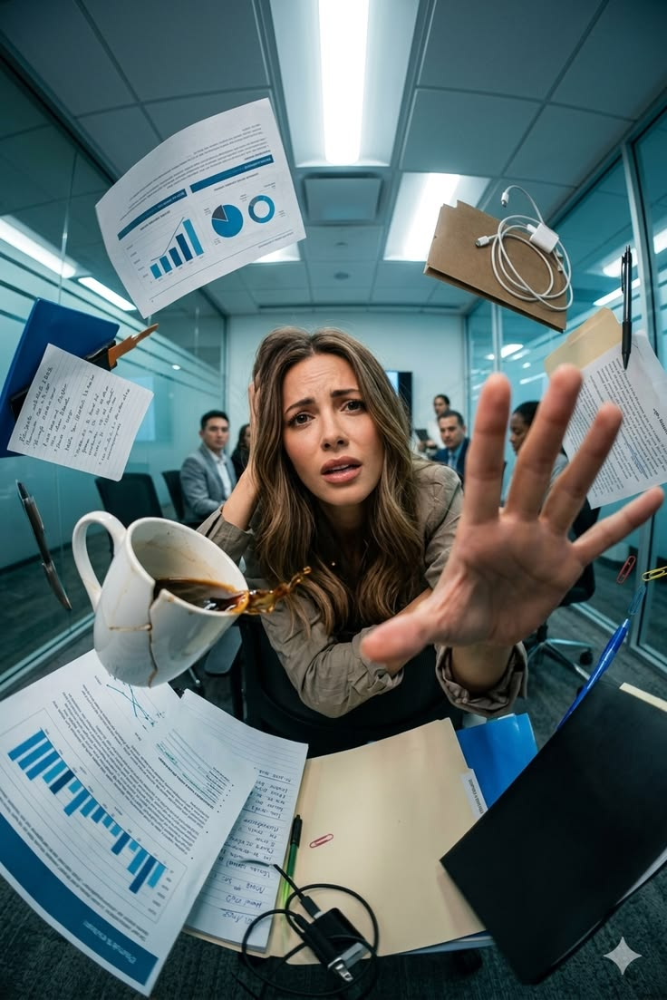
Design de referência com autoria visual curada.
Marketing that gets talked about — imprensa ácido
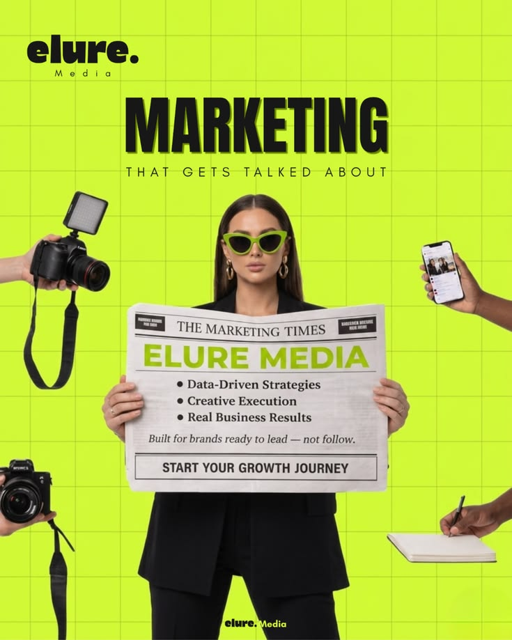

Grade verde ácido, título condensado preto e pessoa central com cartão de jornal claro: manchete, lista e CTA. Câmeras e objetos ocupam slots laterais. Slots retangulares não reproduzem silhuetas recortadas, dobras ou mãos sobre o jornal. 2 regiões de título, 2 apoios textuais, 0 listas semânticas e 4 slots de mídia. 43 camadas em 735×919; fontes Archivo Black, Inter, Anton, Playfair Display.
Papel rasgado — revelação
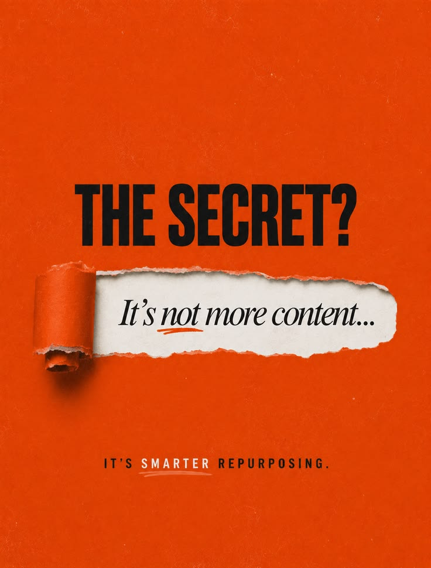
Design de referência com autoria visual curada.
Editorial — Graphic Design

Design de referência com autoria visual curada.
Contraste — While Others Blur
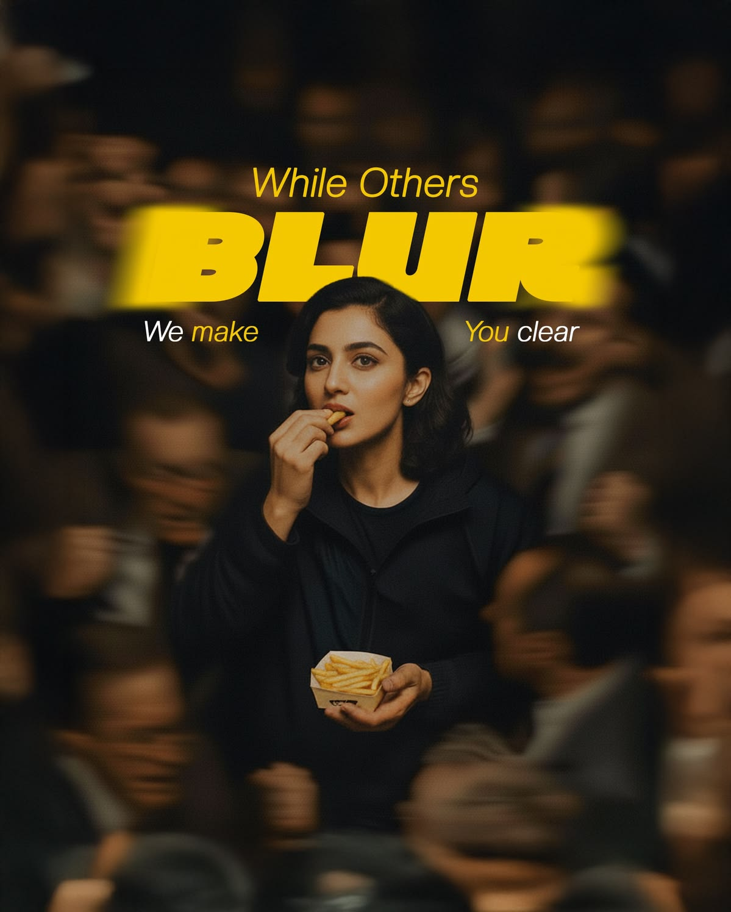
Design de referência com autoria visual curada.
Editorial — Holding my life together

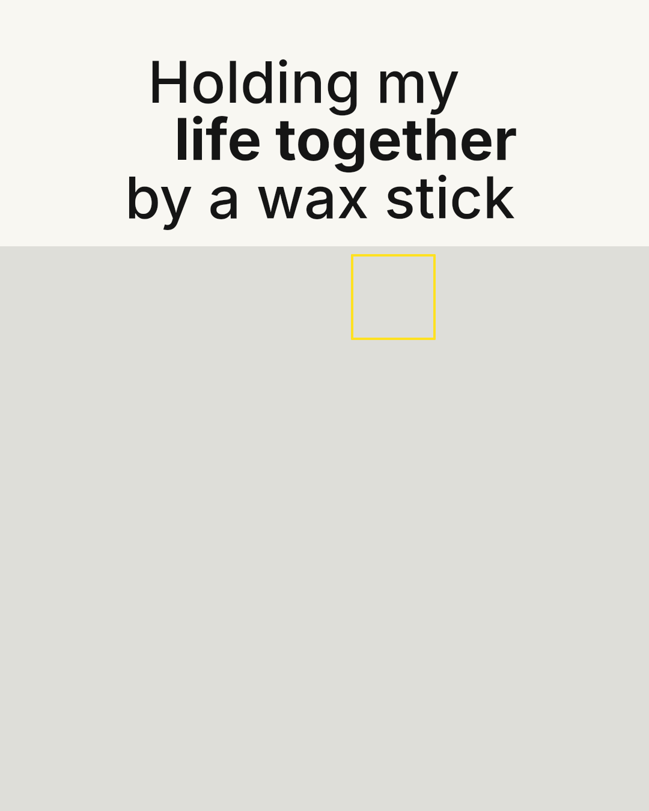
Fundo creme, frase preta compacta acima e grande fotografia de pessoa/produto com mãos e objetos na base. Quadro amarelo marca um produto; mídia substituta deve alinhar esse ponto focal ao quadro, que não acompanha objetos automaticamente. 3 regiões de título, 0 apoios textuais, 0 listas semânticas e 1 slots de mídia. 9 camadas em 1080×1350; fontes Inter.
Contraste editorial — Seu negócio
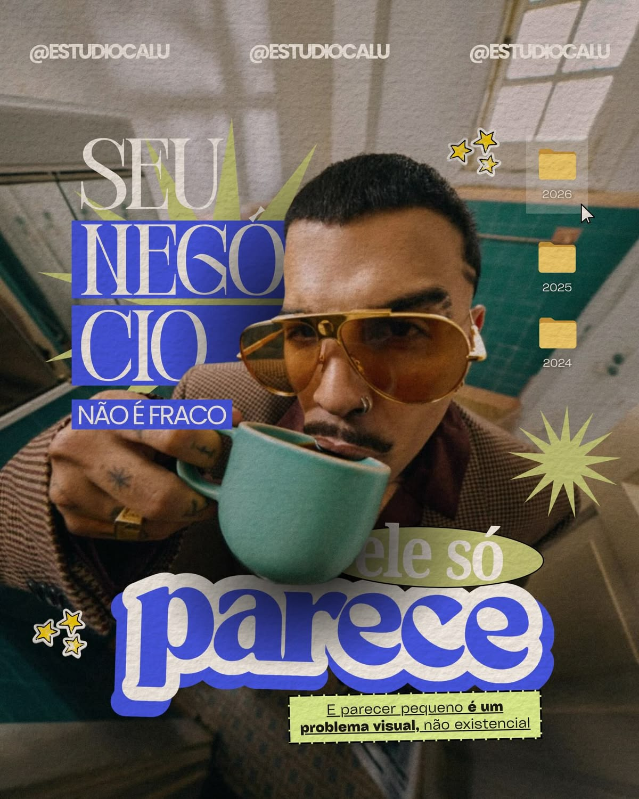

Foto integral com título serifado fragmentado sobre tarjas azuis no alto à esquerda, segunda palavra grande sobre selo azul e detalhes amarelos. Tipografia se espalha ao redor do rosto; o renderer atual não recorta a pessoa à frente das letras. 4 regiões de título, 1 apoios textuais, 0 listas semânticas e 1 slots de mídia. 11 camadas em 1200×1500; fontes Playfair Display.
Catálogo tipográfico — duas colunas
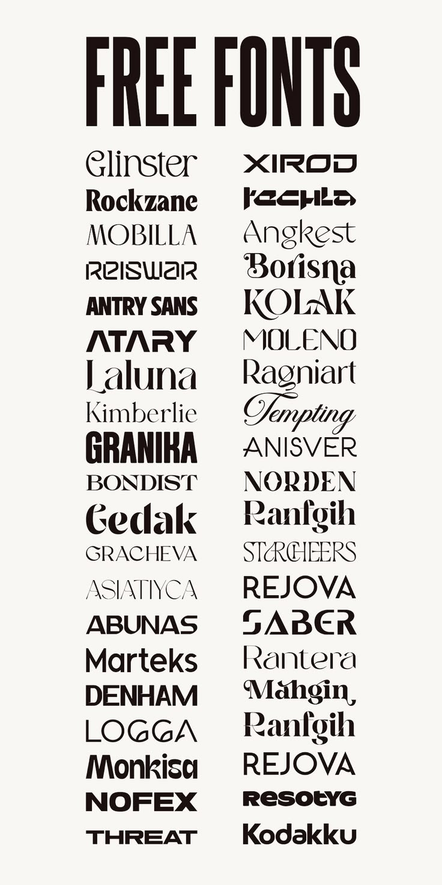
Design de referência com autoria visual curada.